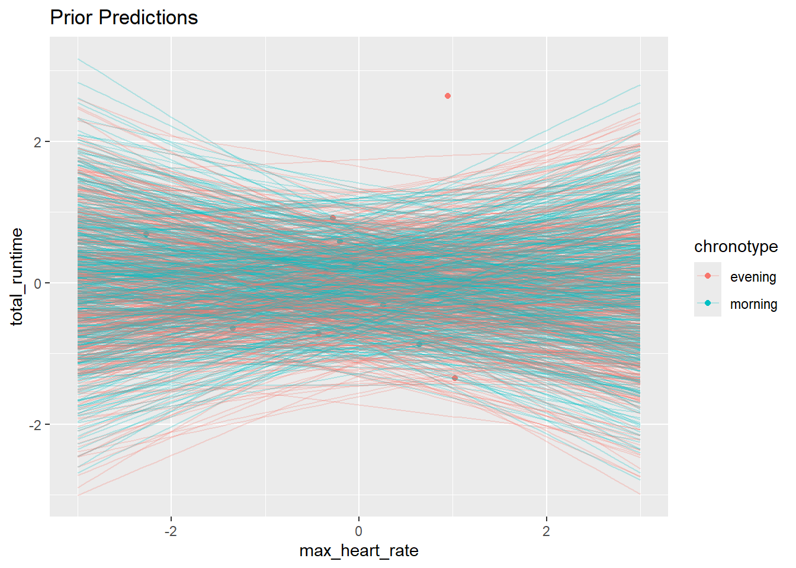
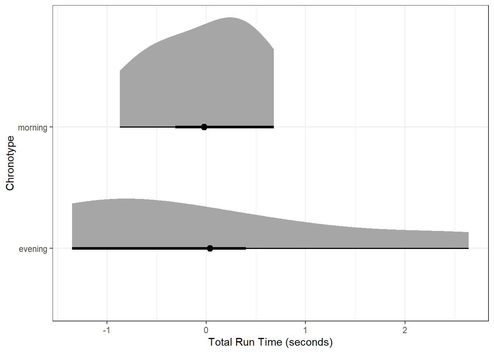
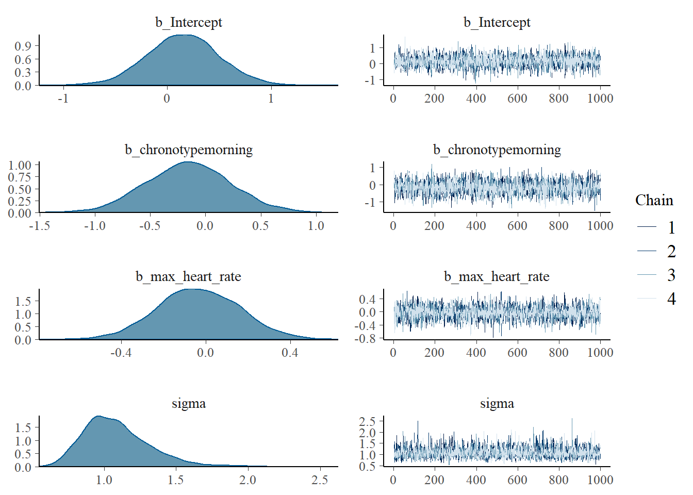
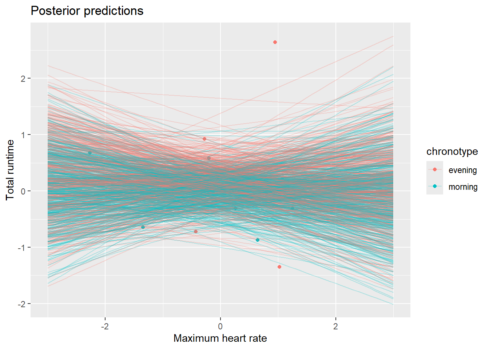
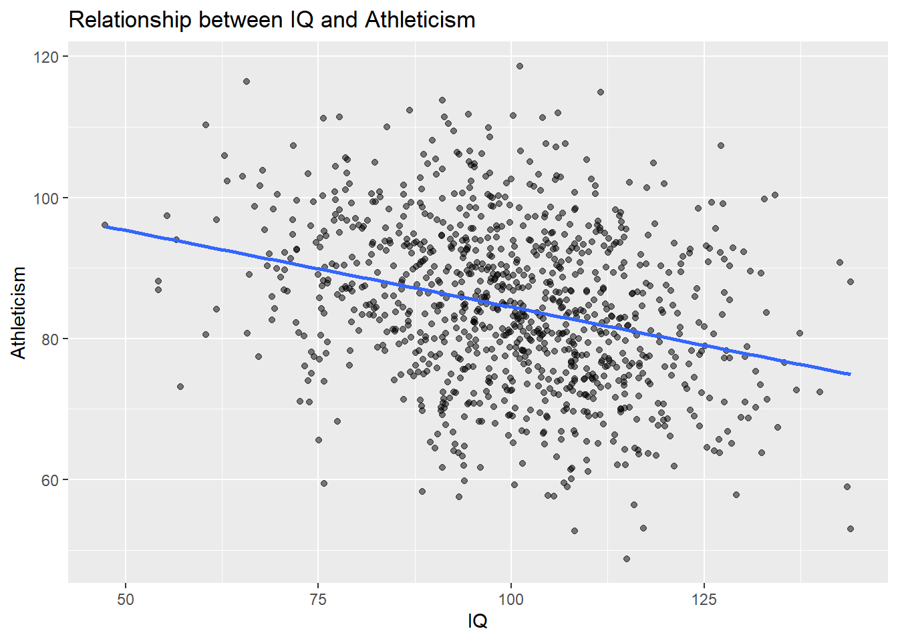
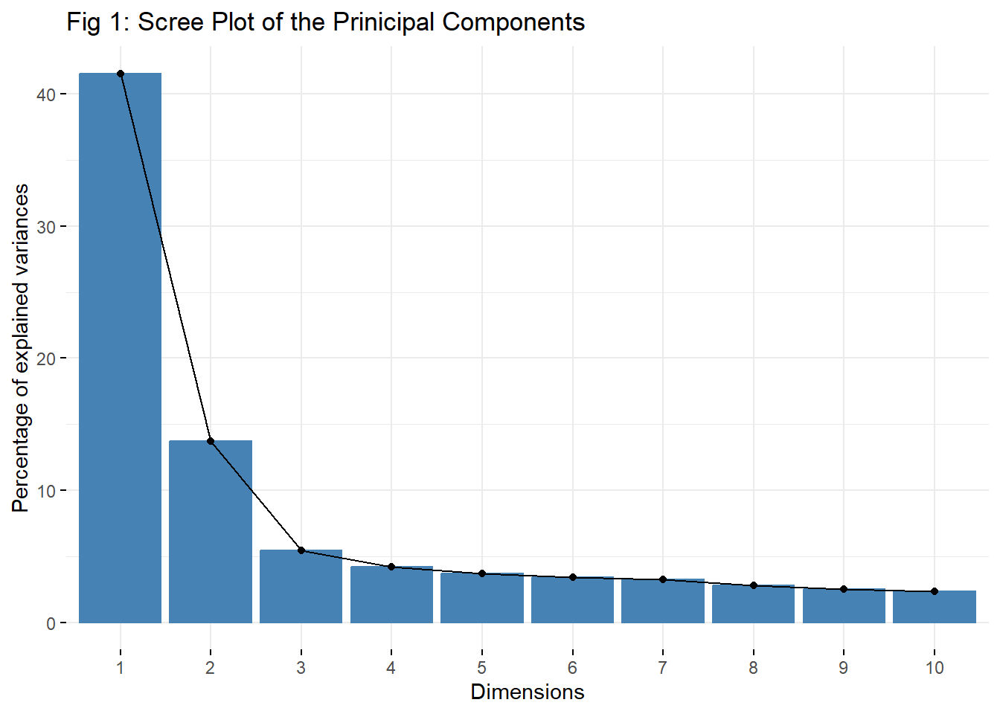
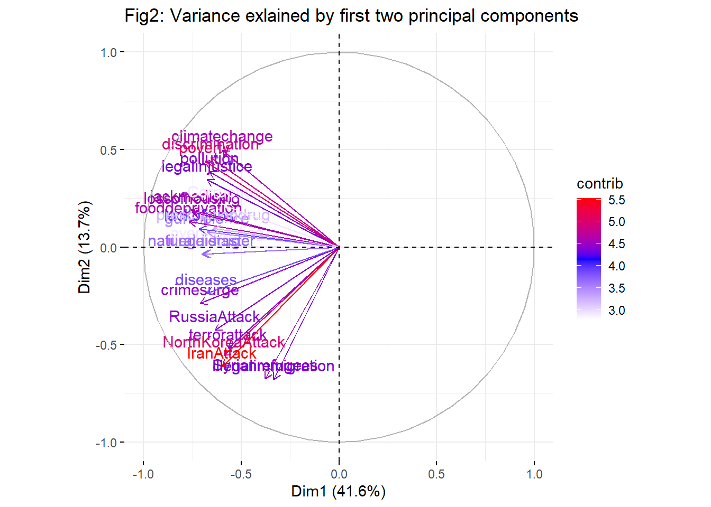

chronotype_data <- read.csv(file.choose())PS947: Homework 4
Adding required libraries
Question 1: Statistics marks
Part 1: Explain model structure and priors
We are interested in checking whether a person’s chronotype affect their total runtime. Here we can consider maximum heart rate as a confounding variable as we believe that heart-rate could directly affect someone’s runtime and also tells us about a person’s fitness. Therefore we require four parameters:- 1. an intercept, 2. effect of chronotype, 3.slope of total_runtime and 4. variance.
Therefore we are standardizing our continuous variables(total_runtime and max_heart_rate) and factorizing the chronotype variable.
# ---------calculating total run-time------------#
chronotype_data <- mutate(chronotype_data, total_runtime = run_min * 60 + run_sec)
# --------Standardizing the variables--------##
chronotype_data$total_runtime <- scale(chronotype_data$total_runtime)
chronotype_data$max_heart_rate <- scale(chronotype_data$max_heart_rate)
chronotype_data$chronotype <- as.factor(chronotype_data$chronotype)
head(chronotype_data) participant age height gender chronotype max_heart_rate run_min run_sec
1 p01 48 195 male morning -0.3530267 29 33
2 p02 60 180 male morning -1.3473852 23 51
3 p03 25 184 male morning -2.2652546 33 22
4 p04 26 163 female morning 0.6413318 22 13
5 p05 35 176 male morning -0.2000485 32 40
6 p06 42 179 male evening -0.4295158 23 19
total_runtime
1 0.1481530
2 -0.6451922
3 0.6793695
4 -0.8725251
5 0.5819411
6 -0.7194234As we have scaled our variables, we know that the mean of both our continuous variables must be 0.
- Our intercept will represent the mean runtime for the participants. It may be higher or lower than the overall grand mean. a ∼ N(0, 0.5)
- bchronotype represents the difference between a person’s chronotype i.e. ‘morning’ or ‘evening’. Therefore, bchronotype ∼ N(0, 0.5) as we don’t know if this is negative or positive.
- From our experience we know that the Heart-rate has direct influence on a person’s runtime capability. Therefore we will set a weakly informative prior(centered on 0) i.e. bmax_heart_rate ~ N(0, 0.5)
- And setting prior value of sigma of around 1.
- Model equation: y = a + bchronotype * chronotype + bmax_heart_rate * max_heart_rate
# ------------ setting prior values------------##
my_priors <- c(prior(normal(0,0.50),class = "Intercept"),
prior(normal(0,0.50),class = "b", coef = "chronotypemorning"),
prior(normal(0,0.25),class = "b", coef = "max_heart_rate"),
prior(exponential(1),class = "sigma"))#-------- Extracting Prior Sample ----------##
prior_sample <- as_draws_df(model)
prior_sample# A draws_df: 1000 iterations, 4 chains, and 6 variables
b_Intercept b_chronotypemorning b_max_heart_rate sigma lprior lp__
1 -0.516 0.370 -0.31 1.915 -3.12 -2.5
2 -0.516 0.370 -0.31 1.915 -3.12 -2.5
3 0.544 -0.440 0.28 0.499 -1.64 -2.3
4 0.886 -0.577 0.35 2.850 -5.02 -4.0
5 0.675 -0.241 0.24 0.542 -1.66 -2.3
6 -0.564 -0.059 -0.18 1.240 -2.20 -2.0
7 0.909 -0.691 0.47 0.114 -3.27 -5.4
8 -0.084 0.545 0.12 0.103 -0.92 -3.2
9 0.397 -0.072 -0.15 0.088 -0.51 -2.9
10 -0.596 -0.043 0.14 0.242 -1.17 -2.6
# ... with 3990 more draws
# ... hidden reserved variables {'.chain', '.iteration', '.draw'}Part 2: Using priors to generate some predictions
#----------- Making predictions using tidybayes---------##
chronotype_data %>% modelr::data_grid (max_heart_rate= seq(-3, 3, 0.1), chronotype) %>%
add_epred_draws (model, ndraws = 500) -> prior_predictions
prior_predictions# A tibble: 61,000 × 7
# Groups: max_heart_rate, chronotype, .row [122]
max_heart_rate chronotype .row .chain .iteration .draw .epred
<dbl> <fct> <int> <int> <int> <int> <dbl>
1 -3 evening 1 NA NA 1 0.423
2 -3 evening 1 NA NA 2 -0.742
3 -3 evening 1 NA NA 3 0.852
4 -3 evening 1 NA NA 4 0.0793
5 -3 evening 1 NA NA 5 1.07
6 -3 evening 1 NA NA 6 -0.294
7 -3 evening 1 NA NA 7 -0.00526
8 -3 evening 1 NA NA 8 0.784
9 -3 evening 1 NA NA 9 -0.599
10 -3 evening 1 NA NA 10 2.03
# ℹ 60,990 more rows# ---------- Plotting prior predictions using tidybayes-----------###
chronotype_data %>% ggplot (aes(max_heart_rate, total_runtime, colour = chronotype)) +
geom_point () +
geom_path(data = prior_predictions, aes(y=.epred, group= interaction(chronotype, .draw)), alpha= 0.25) +
ggtitle("Prior Predictions")Warning: Removed 3 rows containing missing values or values outside the scale range
(`geom_point()`).
Part 3: Visualise the choice of prior
# --------- Visualise the choice of prior using stateye -----###
chronotype_data %>%
ggplot(aes(x = total_runtime, y = chronotype), fill = chronotype) +
stat_halfeye(point_interval = mean_hdi) +
labs(x = "Total Run Time (seconds)", y = "Chronotype") +
theme_bw()
In this case, the “morning” prior distribution is narrower and more peaked, indicating a more precise information about the run times in the morning. On the other hand, the “evening” prior distribution is broader and flatter, telling greater variability in the prior beliefs about the evening run times.
Part 4: Fitting model with real data
# --------- traceplots for fitted model ----------###
plot(model2)
From the distribution of the traceplots, we can conclude that our model is fitted well.
# -------------Posterior predictions ------------###
chronotype_data %>% modelr::data_grid (max_heart_rate= seq(-3, 3, 0.1), chronotype) %>%
add_epred_draws(model2, ndraws = 500) -> posterior_predictions
posterior_predictions# A tibble: 61,000 × 7
# Groups: max_heart_rate, chronotype, .row [122]
max_heart_rate chronotype .row .chain .iteration .draw .epred
<dbl> <fct> <int> <int> <int> <int> <dbl>
1 -3 evening 1 NA NA 1 -0.139
2 -3 evening 1 NA NA 2 -0.0346
3 -3 evening 1 NA NA 3 -0.599
4 -3 evening 1 NA NA 4 0.154
5 -3 evening 1 NA NA 5 0.743
6 -3 evening 1 NA NA 6 0.685
7 -3 evening 1 NA NA 7 -0.891
8 -3 evening 1 NA NA 8 1.85
9 -3 evening 1 NA NA 9 -0.335
10 -3 evening 1 NA NA 10 1.08
# ℹ 60,990 more rowschronotype_data %>% ggplot (aes(max_heart_rate, total_runtime, colour = chronotype)) +
geom_point() +
geom_path(data = posterior_predictions, aes(y=.epred, group= interaction(chronotype, .draw)), alpha= 0.25)+
xlab('Maximum heart rate') + ylab('Total runtime') + ggtitle("Posterior predictions")
Question 2: Causality
Part 1: spurious correlation???
The negative correlation between intelligence (IQ) and athleticism reported by the researcher could be spurious for several reasons:
Selection Bias: If the study only included students with athletic scholarships and compared them to the general student population, there might be an inherent bias. Students with athletic scholarships are likely to be more physically improved, while the general student population may have a broader range of intellectual abilities.
Confound Variables: Other factors might influence both IQ and athleticism, creating the illusion of a correlation. For instance, socioeconomic status, access to resources, nutritional intake, or cultural factors could impact both intellectual aptitude and physical development.
Errors in measurement: The techniques employed to gauge IQ or athleticism may be flawed or inconsistent, resulting in inaccurate findings.
Reverse causality: There’s a possibility that the relationship is the opposite, where athletic prowess shapes the development of certain cognitive abilities, rather than IQ directly impacting athleticism.
Sampling bias: If the subset of students used in the study does not adequately represent the entire population, the results may not be generalizable.
Part 2: Distinction material
# Simulating Random data (1000 datapoints)
set.seed(50)
n <- 1000
intelligence <- rnorm(n, mean = 100, sd = 15)
socioeconomic_status <- rnorm(n, mean = 50, sd = 10)
athleticism <- 80 - 0.2 * intelligence + 0.5 * socioeconomic_status + rnorm(n, mean = 0, sd = 10)
# Converting into data frame
data <- data.frame(intelligence, athleticism, socioeconomic_status)
# Calculate correlation between intelligence and athleticism
cor_intelligence_athleticism <- cor(intelligence, athleticism)
print(paste("Correlation between intelligence and athleticism:", cor_intelligence_athleticism))[1] "Correlation between intelligence and athleticism: -0.289535228457276"We simulated a dataset where negative correlation exists between intelligence and athleticism to mimic the condition of the given question. The output shows a negative correlation between intelligence and athleticism, which could be interpreted as a spurious correlation due to the influence of the confounding variable, socioeconomic status.
# Plot the relationship between IQ and athleticism
ggplot(data, aes(x = intelligence, y = athleticism)) +
geom_point(alpha = 0.5) +
geom_smooth(method = "lm", se = FALSE) +
labs(x = "IQ", y = "Athleticism", title = "Relationship between IQ and Athleticism")`geom_smooth()` using formula = 'y ~ x'
# Plot the relationship between IQ and athleticism
summary(lm(athleticism ~ intelligence + socioeconomic_status, data = data))$coefficients Estimate Std. Error t value Pr(>|t|)
(Intercept) 79.9335788 2.59846645 30.76183 1.179802e-146
intelligence -0.2134130 0.02019677 -10.56669 8.235533e-25
socioeconomic_status 0.5167661 0.03163184 16.33690 2.428297e-53From the above summary we can observe two things:- 1. people with better socioeconomic_status posses better athleticism characteristics. 2. Better intelligence contributes to decreased athleticism.
Our second observation could be deceptive. When analyzing the correlation between intelligence and athleticism without considering socioeconomic status, we notice a negative correlation. Nevertheless, this correlation might be spurious since socioeconomic status affects both intelligence (via educational access and resources) and athleticism (through access to sports facilities and opportunities).
Question 3: PCA
Part 1: Conduct a PCA
#----- loading threat data-------#
threat_data <- read.csv(file.choose())#------- Conducting Principal Component Analysis------#
PCA_threat <- prcomp(threat_data, scale. = TRUE)
summary(PCA_threat)Importance of components:
PC1 PC2 PC3 PC4 PC5 PC6 PC7
Standard deviation 3.1579 1.8148 1.14003 1.00202 0.94300 0.90418 0.88289
Proportion of Variance 0.4155 0.1372 0.05415 0.04184 0.03705 0.03406 0.03248
Cumulative Proportion 0.4155 0.5527 0.60690 0.64874 0.68579 0.71985 0.75233
PC8 PC9 PC10 PC11 PC12 PC13 PC14
Standard deviation 0.81775 0.77631 0.75006 0.72191 0.66402 0.63460 0.60500
Proportion of Variance 0.02786 0.02511 0.02344 0.02171 0.01837 0.01678 0.01525
Cumulative Proportion 0.78019 0.80531 0.82875 0.85046 0.86883 0.88561 0.90086
PC15 PC16 PC17 PC18 PC19 PC20 PC21
Standard deviation 0.5900 0.53312 0.52463 0.52033 0.50422 0.48291 0.4568
Proportion of Variance 0.0145 0.01184 0.01147 0.01128 0.01059 0.00972 0.0087
Cumulative Proportion 0.9154 0.92721 0.93868 0.94996 0.96055 0.97027 0.9790
PC22 PC23 PC24
Standard deviation 0.43472 0.41397 0.38011
Proportion of Variance 0.00787 0.00714 0.00602
Cumulative Proportion 0.98684 0.99398 1.00000Part 2: Variance Explained by first two Components
#------ Checking the Loadings for the First Principle components-------#
All_loadings <- PCA_threat$rotation
Loadings_FirstPC <- All_loadings[,1]
Loadings_FirstPC naturaldistaster climatechange pollution terrorattack
-0.2222593 -0.1893170 -0.2098369 -0.1796145
crimesurge gunviolence legalinjustice discrimination
-0.2254144 -0.2138071 -0.2139596 -0.2078867
poverty debt illegaldrug lackofjobs
-0.2177929 -0.1878416 -0.2192736 -0.2270000
lossofhousing fooddeprivation diseases lackmedical
-0.2383224 -0.2428404 -0.2145256 -0.2397234
prescriptiondrug overcrowding Syrianrefugees illegalimmigration
-0.2041785 -0.1967182 -0.1198028 -0.1056214
NorthKoreaAttack IranAttack RussiaAttack Corruption
-0.1870135 -0.1891962 -0.2008538 -0.1853469 # Proportion of variance explained by first two principle components
PVE <- (PCA_threat$sdev)^2 / sum((PCA_threat$sdev)^2)
PVE_first_2_PC <- PVE[1:2]
PVE_first_2_PC[1] 0.4155175 0.1372300From the result we can conclude that the first principal component is responsible for 41.55% of the variance in the data, while the second component explains additional 13.72% variance. Therefore in total, the first two principal components contribute towards 55.27% variance in the data.
Part 3: Draw a plot to examine the first two principal components
fviz_eig(PCA_threat) + ggtitle("Fig 1: Scree Plot of the Prinicipal Components")
fviz_pca_var(PCA_threat,axes = c(1, 2), col.var = "contrib",
gradient.cols = c("white", "blue", "red"),
ggtheme = theme_minimal()) + ggtitle("Fig2: Variance exlained by first two principal components")
Part 4: Interpreting the first two principal components
# Rendering variable coordinates
var_coords <- get_pca_var(PCA_threat)$coord
# Print the coordinates for the first two components
print(var_coords[, 1:2]) Dim.1 Dim.2
naturaldistaster -0.7018757 -0.037148141
climatechange -0.5978467 0.498522382
pollution -0.6626469 0.385379019
terrorattack -0.5672072 -0.519126029
crimesurge -0.7118392 -0.289339421
gunviolence -0.6751845 0.076555227
legalinjustice -0.6756661 0.344575472
discrimination -0.6564882 0.459560076
poverty -0.6877713 0.441183750
debt -0.5931875 0.132117591
illegaldrug -0.6924473 -0.035493449
lackofjobs -0.7168465 0.093439216
lossofhousing -0.7526015 0.179227582
fooddeprivation -0.7668691 0.130839925
diseases -0.6774534 -0.235752773
lackmedical -0.7570257 0.192243560
prescriptiondrug -0.6447780 0.096642996
overcrowding -0.6212192 0.005137755
Syrianrefugees -0.3783268 -0.675407493
illegalimmigration -0.3335434 -0.679484769
NorthKoreaAttack -0.5905726 -0.556802389
IranAttack -0.5974654 -0.613673536
RussiaAttack -0.6342789 -0.427549601
Corruption -0.5853094 0.213469693By examining the variable coordinates and the above plots, we can explore numerous interesting facts. Dim.1 and Dim.2 are first and second principal components respectively. From the above PVE(Proportion of variance ) analysis we have seen that the first two principal components explain 41.55% and 13.72% variances in the data respectively.
The variables with the highest negative loadings on Dim.1 are related to personal and societal threats, such as: fooddeprivation, lossofousing, lackofjobs, crimesurge, lackmedical, poverty, legalinjustice, discrimination etc. Our findings suggest that that Dim.1 represents a contrast between personal and societal threats, with negative values corresponding to higher levels of concern.
The variables with the highest positive loadings on Dim.2 are related to environmental and social issues, such as climatechange, pollution, discrimination, poverty etc. On contrast, the variables with the highest negative loadings on Dim.2 are related to external threats, such as: Syrianrefugees, illegalimmigration, NorthKoreaAttack, IranAttack, RussiaAttack, terrorattack etc. So our observation for Dim.2 suggest that Dim.2 represents a contrast between environmental and social issues (positive values) and external threats (negative values)
NOTE:- PDF version of the executed file is uploaded to GIT